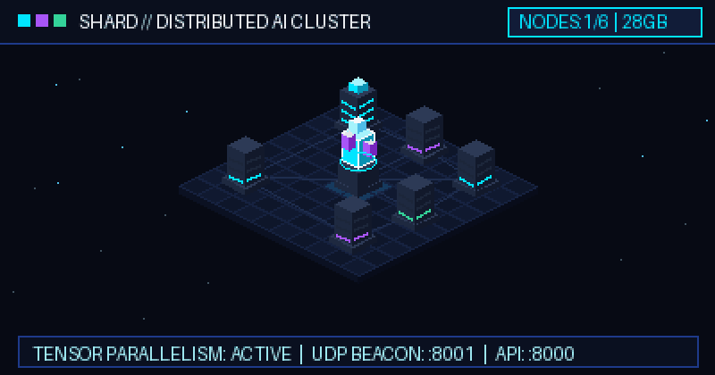
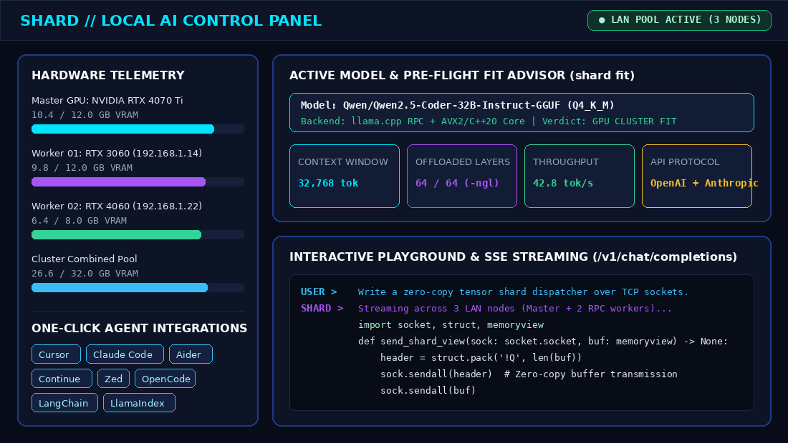

One Network. Many Servers. Shared AI Infrastructure.
Pool GPU VRAM and system memory across local machines to run massive open LLMs. Powered by PyTorch, FastAPI, llama.cpp RPC, and native SIMD kernels.

What Is SHARD?
SHARD transforms fragmented personal hardware into a unified AI inference engine. No expensive enterprise GPUs or datacenter NVLink interconnects required.
The Problem
High-parameter frontier models like 14B, 32B, and 70B exceed the 6-12 GB VRAM capacity of consumer GPUs. Developers are forced into expensive cloud API bills or painfully slow single-CPU offloading.
The Solution
SHARD pools video memory and RAM across everyday computers on your local network. A gaming laptop with 8 GB VRAM paired with a desktop holds and runs 32B models collaboratively with zero cloud dependence.
The Advantage
Rather than all-reduce tensor parallelism that demands 100 Gbps cables, SHARD uses layer sharding via llama.cpp RPC. Activations hop sequentially at ~8 KB per token, running fluidly over standard Wi-Fi or Gigabit LAN.
How SHARD Works
From standalone PC to multi-node cluster in four transparent steps. Zero complex Kubernetes configurations or network drivers.

CREATE
Launch your master server. SHARD initiates the FastAPI REST gateway, loads hardware telemetry, and broadcasts UDP discovery beacons on port 8001.
shard lan create "lab" --open

SHARE
Worker machines on your LAN join with one command. Each node contributes spare GPU VRAM or system RAM to the shared cluster memory pool.
shard lan join 192.168.1.50 --share

CONNECT
Clients and developer tools automatically discover available cluster servers without manual IP configuration. Open networks accept connections with zero friction.
shard lan status

USE
Plug Cursor, Claude Code, Aider, or your custom agents directly into the standard /v1 endpoint. Stream tokens at full local speed.
http://localhost:8000/v1
Engine Features
Engineered from the ground up for low-latency inference, memory efficiency, and developer ergonomics.
Zero-Config LAN Discovery
UDP beacons announce cluster availability every 2 seconds. Nearby nodes appear in the dashboard automatically with instant one-click pairing.
llama.cpp RPC Layer Sharding
Proportional tensor split (-ts) assigns memory slices based on exact device capacity. Layer hops transfer only ~8 KB activation buffers.
PyTorch & GGUF Dual Engines
Run pure PyTorch models for research and development or high-efficiency quantized GGUF models for peak tokens-per-second performance.
C++20 & MASM AVX2 SIMD
Handcrafted 64-bit assembler kernels deliver sub-microsecond vector operations and zero-copy ring buffers on Windows x64 and Linux.
Pre-Flight Hardware Fit Advisor
Run shard fit before downloading gigabytes. The analyzer mathematically determines if a model fits single-node or requires LAN pooling.
OpenAI & Anthropic /v1 Parity
Complete drop-in compatibility for /v1/chat/completions and /v1/messages with streaming Server-Sent Events (SSE) and tool calling.


System Architecture
Transparent modular architecture. Click any subsystem on the left to inspect its role, communication protocols, and source location.
Master llama-server & Tensor Splitter
Executes llama-server with --rpc targets and -ts weights. Hosts model weights, coordinates inference layers, and handles master GPU/RAM device budget allocation.
Installation & Quick Start
Choose your preferred environment. SHARD runs anywhere from standalone developer laptops to dedicated LAN clusters.
git clone https://github.com/avelone123123/shard.git cd shard
python -m pip install -e .
shard start
shard lan create "lab-cluster" --open
docker compose up -d
python native/build_native.py shard test
Real-World Use Cases
How developers and teams deploy SHARD to solve real memory bottlenecks without subscription costs.
The Laptop + Desktop Supernode
Combine an RTX 3060 gaming laptop (6 GB VRAM) with an office desktop (16 GB RAM). Together, they pool 22 GB to run 32B coding models effortlessly.
Unlimited AI Coding Agent Backend
Point Cursor, Claude Code, and Aider to http://localhost:8000/v1. Enjoy infinite completions and refactoring sessions with zero rate limits or token bills.
100% Air-Gapped Enterprise Lab
Host proprietary codebases and sensitive data. All model weights, KV caches, and tokens remain strictly inside your physical local network.
Frequently Asked Questions
Technical specifics, requirements, and hardware compatibility.
You can start with a single PC running Windows or Linux with a modern CPU supporting AVX2. Adding an NVIDIA GPU accelerates inference, and connecting additional LAN computers pools their memory automatically.
SHARD leverages llama.cpp's native RPC protocol. The master node analyzes available memory budgets across all connected machines and splits model layers proportionally using the -ts flag.
No. Because SHARD uses layer sharding rather than all-reduce tensor splitting, only the hidden state activations (~8 KB per token hop) are transmitted between nodes. Standard Gigabit Ethernet or Wi-Fi is fully sufficient.
Yes. SHARD provides 100% compatible /v1/chat/completions (OpenAI) and /v1/messages (Anthropic) endpoints with streaming SSE support. Simply point your tool base URL to http://localhost:8000/v1.
Introduced in v1.8.0, an open network broadcasts an open flag in its UDP beacon. Other machines on your local subnet can discover and join the cluster with a single click without typing a pairing code.
Yes. SHARD is 100% open source under the permissive MIT License. You are free to inspect, modify, fork, and deploy it for personal and commercial applications.
Your server. Your network. Your SHARD.
Experience genuine local AI autonomy. Pool your hardware and run frontier models today.